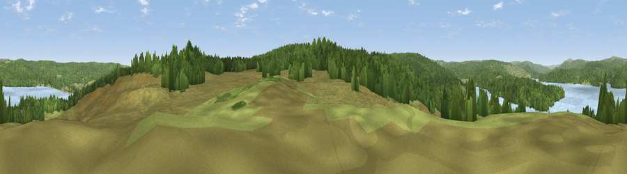

Viewpoint near Falstone
#21806 in England · top 51% of its area beats it · near FalstoneWhere it is
The exact computed spot (NY 69675 86175). Click the marker for map links.
The view, rendered

A 360° render of this exact spot computed from the terrain model, tree cover and land cover — summer colours, afternoon light, calibrated against photographs of famous viewpoints. Real trees, hedges and buildings will differ in detail.
The panorama
Grey silhouette: terrain skyline in each direction (720 bearings, Earth curvature and refraction included). Dashed green: skyline with trees (+15 m) and buildings (+8 m) as obstacles. Blue strip: how far the ground is visible on each bearing.
Where the view opens
Wedge length = distance to the farthest visible ground on that bearing (vegetation-aware). Rings at 10, 25 and 50 km.
What fills the view
42% woodland · 37% grassland · 21% water
Angular shares of the visible panorama (visual magnitude), not map area. Landscape diversity 0.47 (0–1 Shannon).
Key numbers
More beautiful places nearby
The staircase of upgrades: each row has a higher view potential than everything closer. Driving times are estimates from straight-line distance, calibrated against real road routing — check an actual route before setting out.
| Place | Direction | Drive | Score |
|---|---|---|---|
| Viewpoint near Falstone | N · 3 km | ~8 min | 61.2 |
| Bolts Law | S · 4 km | ~10 min | 67.1 |
| Earl's Seat | NNE · 6 km | ~14 min | 67.4 |
| Viewpoint c11634_7288 | SW · 7 km | ~14 min | 71.8 |
| Monkside | N · 9 km | ~18 min | 78.4 |
| Viewpoint c11644_7156 | WSW · 12 km | ~23 min | 80.8 |
| Viewpoint c11995_7247 | NNW · 15 km | ~28 min | 82.1 |
| Viewpoint near Hepple | ENE · 34 km | ~52 min | 82.4 |
55.16895, -2.47759 · source: screening · position refined by local search. Computed location — check access rights before visiting.